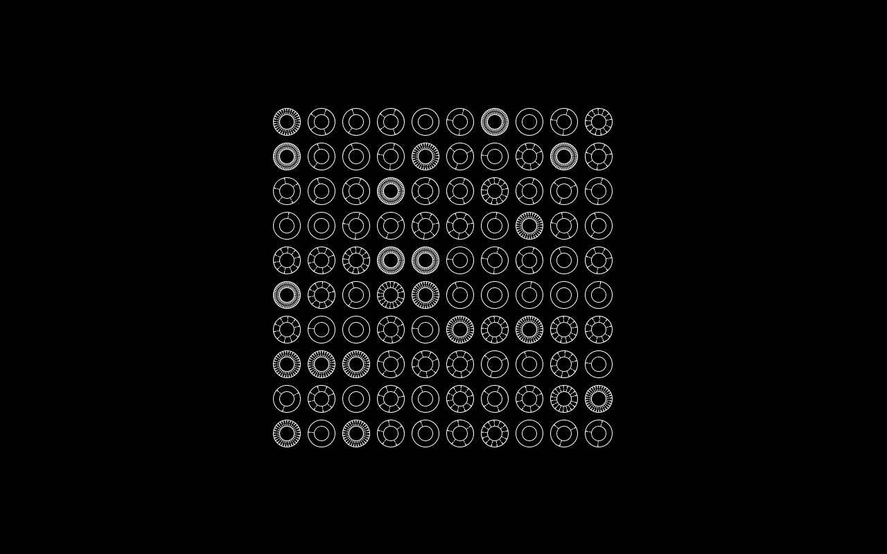
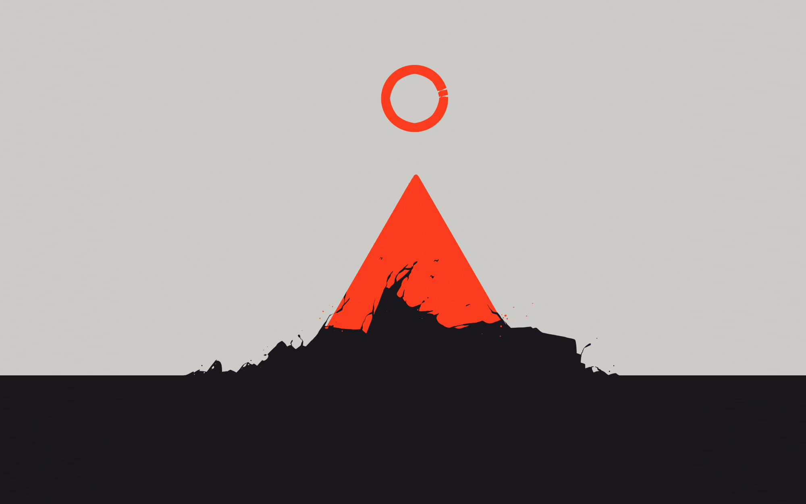

The Soundtrack collection contains various scores written for Software projects.
oquonie soundtrack — The Oquonie Soundtrack, Impossible Spaces, is the ambient score of the game Oquonie.rabbits soundtrack — The Rabbits Soundtrack is the drone audio tracks of the Hundred Rabbits video diaries.purgateus soundtrack — The Purgateus Soundtrack is the score for the Purgateus remix of the game Proteus.noon guest — Noon Guest is the official MoonQuest soundtrack.